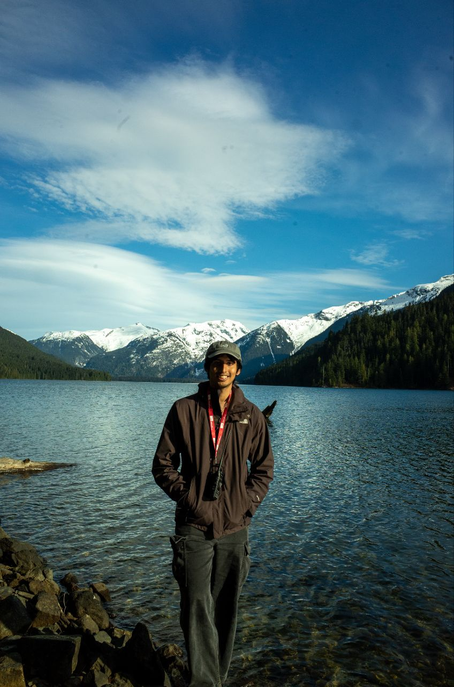

A little about
who I am

Hey, I'm Hassan!
I'm a Chemical Engineering graduate from the National University of Singapore, with a Specialization in Safety and Sustainability and a second Major in Innovation and Design.
On the professional front, I've had the opportunity to work on various projects that have allowed me to apply my engineering skills in numerous real-world settings. From international water remediation projects to machine learning research, I have garned experience across a range of domains and industries. As such, I've developed a passion for learning and applying new skills, and I enjoy working on projects that allow me to do both.
In particular, I'm deeply interested in the intersection of engineering, sustainability and design. I believe that engineering solutions should not only be effective but also sustainable and user-centric. I'm always eager to take on projects that challenge me to think creatively and critically about how we can design better systems for a more sustainable future.
On the personal front, I am an amateur photographer, having taken courses and gigs in photography. In fact, the pictures you see are all taken by me! Apart from photography, I also enjoy hiking and exploring nature, and am a proud parent to two mischievous cats.
Let's Work TogetherExperience & Education
Where I've worked and learned over the years.
Education
National University of Singapore (NUS)
Bachelor of Engineering in Chemical Engineering (Honours)
- Specialisation in Safety and Sustainability
- Second Major in Innovation and Design
- Special Program in NUS College
- GPA: 4.69/5.00 (First Class Honours)
- Relevant coursework: Chemical Process Safety; Computer-Aided Chemical Process Simulation; Control of Industrial Processes; Cost Analysis and Engineering Economy
- Ministry of Education (MOE) Tuition Grant Recipient; Employment Pass Eligibility Letter Holder
University of British Columbia (UBC)
Student Exchange Program (SEP)
- Relevant coursework: Unit Operations; Engineering Economics for Chemical Engineers
- Awarded $10,000 through Canada-ASEAN SEED 2025 Scholarship for an exchange program at the University of British Columbia
Experience
Research & Development Intern — Hydroleap Pte Ltd
- Conducted 5–6 environmental compliance testing (Chemical Oxygen Demand, Free Chlorine) on semiconductor fab wastewater to support compliance with the Sewerage and Drainage Act (SDA) and the Sewerage and Drainage (Trade Effluent) Regulations
- Executed Boron-Doped Diamond (BDD) electro-oxidation trials and evaluated performance against client's EHS acceptance criteria, recommending corrective process controls to achieve up to 93% COD reduction
- Utilised Microsoft VBA to create Excel macros and add-ins for experimental data cleaning, cutting time needed for data validation by 80%
Project-Based Intern — Shin Seiki
- Developed an annual energy consumption calculator on Excel for 3-phase Variable Refrigerant Flow (VRF) air-conditioning systems to assess client's energy savings
- Developed an annual energy consumption calculator on Excel for a two stage Variable-Speed Drive (VSD) air compressors to assess client's energy savings
- Collaborated with National Environment Agency (NEA) to verify and validate proposed methodologies
Student Tutor — Department of Mechanical Engineering, NUS
- Extended engineering support to a class of 20+ students, debugging issues found in development of students' robots and advising on next steps
- Optimised 3D designs provided by 18 teams using Fusion360 to enable structurally sound laser-cut acrylic prints
Environmental Engineering Intern — Carbon GPT SDN BHD
- Trained on a GHG Protocol framework to understand carbon accounting and reporting processes and terminology such as Scope 1, 2, 3 emissions
- Headed market research on carbon accounting and reporting frameworks regionally and internationally (e.g., Partnership for Carbon Accounting Financials)
- Co-developed 17 Streamlit prototype webpages to showcase market research in an interactive webpage for internal and external stakeholders as potential new SaaS features
Student Researcher — Department of Mechanical Engineering, NUS
- Prepared 5L bioreactors to cultivate and harvest Symbiotic Culture Of Bacteria and Yeast (SCOBY) from kombucha for tensile and stress tests via a tensile tester
- Directed experiments to evaluate ideal molar composition of Deep Eutectic Solvents (DES) required to increase ultimate tensile strength
Volunteering
Co-Program Manager — NUS Overseas College (NOC) Malaysia
- Pioneered a 3-month NOC Malaysia program as a co-program manager to manage welfare of 17 students and coordinate critical course information between University Malaya course supervisor and students
- Supervised sponsor funds of $3000 to co-organise 3 events including: welfare event for NOC students, networking dinner and final dinner for the NOC students
Co-Director, Head of Logistics and Tutor — NUS College Connect Tuition
- Spearheaded a collaboration with TeachSG and Impart SG to onboard at-risk youths for mentoring
- Sourced and managed $3000 of club funds to be utilised in enrichment activities for mentors and mentees alike